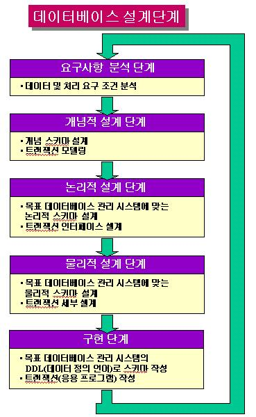
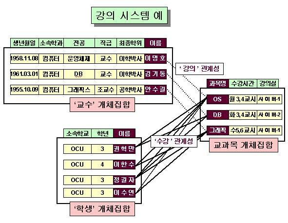
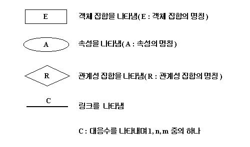
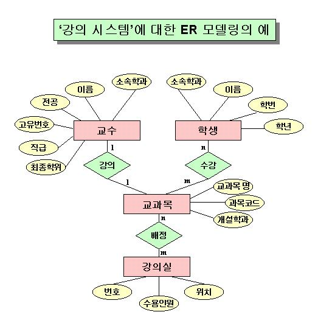
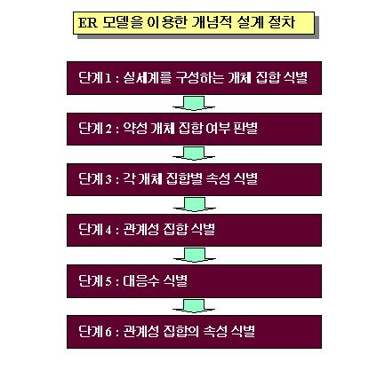

목 차
|
시작하기전에....제 2회 "데이터베이스 설계란 무엇인가?"를 학습하면서 다음에 대하여 정리해 보도록 합시다.
|
1. 데이터베이스 설계 개념데이터베이스 설계(database design)란 ?어느 한 실세계를 대상으로 지속적으로 관계하여 업무처리를 수행하고 있는 사람은 그 실세계와 관련된 정보를 신속하고 정확하게 얻거나 처리하길 원하며 이러한 가운데 컴퓨터를 이용한 자동화에 대한 요구가 발생하게 된다. 그 사람이 업무처리의 대상으로 관여하고 있는 실세계로부터의 정보 획득과 처리는 그 실세계를 구성하는 구성요소와 이들간의 관계에 대한 정보로부터 .비롯되며 이 정보들의 적절한 조합에 의해 새로운 정보가 창출된다.한편, 인간이 수행하는 모든 업무는 절차성을 가지고 동적으로 수행된다. 컴퓨터를 이용한 업무 자동화란 궁극적으로 업무와 관련된 실세계의 구성요소와 구성요소들간의 관계 정보를 데이터베이스화하고 절차성을 갖는 업무를 프로그램화하는 것을 말한다. 특히, 업무를 프로그램화할 때는 업무를 단위 기능별로 나누어 각각의 기능을 모듈화 시켜서 프로그램화하는데 이러한 논리적 단위의 프로그램 모듈을 트랜잭션(transaction)이라 한다(사실 상 트랜잭션에 대한 공식적인 정확한 정의는 이 정의가 갖는 개념 이상이지만 다음 기회로 미루기로한다). 데이터베이스 설계란 실세계와 관련한 업무를 컴퓨터를 이용하여 수행할 목적으로 이를 위한 사용자의 요구 조건에서부터 데이터베이스 구조를 도출해 내는 과정을 의미한다. 데이터베이스 설계의 근본 문제는 일정 응용 업무를 위해 한 조직에 있는 사용자의 정보 요구에 부합할 수 있도록 데이터베이스의 논리적 물리적 구조를 어떻게 설계하는냐 하는 것이다. 데이터베이스 설계의 목표는 여러 가지가 있을 수 있는데, 예를 들자면 특정 사용자와 응용의 정보 내용요구를 만족시키는 것, 자연스럽고 쉽게 이해할 수 있는 정보 구조를 제공 하는 것, 그리고 처리의 요구 조건과 응답 시간, 처리 시간, 저장 공간 등과 같은 성능 목적을 지원하는 것 등을 들 수 있다. 사실 상, 이들을 모두 달성하기란 아주 어렵고 또 달성 여부의 측정도 어렵다. 문제가 더욱 심각한 것은 데이터베이스 설계 과정은 가끔 비공식적이고 확실히 정의 되지 않은 요구 조건에서부터 시작하는 반면에 이 설계 결과가 일단 구현되기만 하면 변경하기 어렵운 견고한 데이터베이스 스키마가 된다는 점이다. 데이터베이스 설계의 분류실세계를 컴퓨터 내부로 반영하기 위해서는 궁극적으로 실세계의 정보가 보조기억 장치에 물리적 스키마 형태로 표현·저장되어야 한다. 그러나 실세계를 물리적 스키마로 직접 변환하기란 마치 설계도 없이 건물을 짓는 것과 마찬가지로 매우 어려운 작업임과 동시에 최종적인 물리적 데이터베이스에 심각한 오류를 수반할 가능성이 많아지게 된다. 따라서 이러한 문제점을 최소화하기위해 설계 작업을 거친다. 데이터베이스 구축에 있어 설계 작업은 개념적 설계, 논리적 데이터베이스 설계, 물리적 데이터베이스 설계 등으로 단계적으로 나뉜다. 1) 개념적 설계(Conceptual Design)실세계의 정보를 직접 물리적 스키마로 변환한다는 것은 앞에서 설명한 바와 같이 많은 어려움이 따르게 되고 구축된 데이터베이스는 검색과 관리면에서 심각한 오류를 포함할 수 있게 된다. 따라서 물리적 스키마로 직접 변환하기 이전에 우선 인간이 표현하기 쉬고 이해하기 쉬운 관점에서 실세계를 표현할 필요가 있는데 이러한 관점에서 표현하는 과정을 개념적 설계라 한다. 다시말하면 개념적 설계란 인간이 표현하기 쉽고 이해하기 쉬운 개념적 관점에서 실세계를 표현하는 과정이라 말할 수 있다. 개념적 설계는 실세계를 대상으로 실세계의 구성요소, 구성요소의 특성, 구성요소들 사이에 존재하는 관계 등을 표현하게 된다. 따라서 개념적 설계는 일반적으로 실세계의 구성요소 식별, 구성요소가 갖는 특징요소 식별, 구성요소들 사이의 관계 식별등을 행하는 작업이다. 개념적 설계는 인간의 개념적 측면에서 실세계를 표현하기 때문에 추상성이 매우 높은 편이며 컴퓨터 시스템이나 데이터베이스 관리시스템을 전혀 고려함이 없이 이들과 독립적으로 진행된다. 실질적으로 개념적 설계는 인간의 개념적 측면에서 실세계를 표현하기 위해 실세계를 구성하는 구성요소, 구성요소의 특성, 구성요소들간의 관계 등의 개념을 표현하는 도형이나 언어로서 나타내는데 이와 같이 개념적 설계를 위해 사용되는 도형들의 모임이나 언어 등과 같은 개념들의 집합체를 개념적 모델이라 한다. 개념적 설계는 이러한 개념적 모델에 포함된 여러 종류의 개념을 이용하여 행한다. 개념적 모델 중 데이터베이스 설계에서 가장 많이 사용하는 대표적인 모델이 바로 ER 모델이며 ER 모델은 본 강의의 뒷부분에서 설명하도록 한다. 이외에도 Semantic 모델, Conceptual Dependency 모델, 논리 중심(Logic-based) 모델, 프래임 중심(Frame-based) 모델, 규칙 중심(Rule-based) 모델 등이 개념적 모델로서 이용되고 있다. 2) 논리적 스키마 설계(Logical Schema Design)논리적 스키마 설계란 '제 1 회 데이터베이스란 무엇인가 ?'에서 설명한 데이터베이스 추상 레벨에서 논리적 레벨의 논리적 스키마를 생성해 내는 것을 말한다. 즉, DBMS(데이터베이스관리 시스템)에 따라 그 DBMS가 채택하고 있는 데이터베이스에 대한 자료구조가 서로 다를 수 있는데, 이러한 데이터베이스에 대한 자료구조 형식를 논리적 데이터 모델 또는 간략히 데이터 모델이라 한다. 이 데이터 모델은 실세계 구성요소를 표현하는 레코드 구조와 각 필드의 타입, 레코드 타입들간의 관계 표현(이는 레코드 타입과 대응되는 실세계의 구성요소들간의 관계를 나타냄) 등을 포함 한다. 몇가지 예로 다음 강의에서 자세히 다루어질 관계형 데이터 모델은 구성요소와 구성요소의 특성, 구성요소들간의 관계가 모두 행렬 형태의 테이블 구조로 표현되며 객체지향 데이터 모델에서는 구성요소들간의 관계가 포인터 중심으로 표현된다. 논리적 설계에서 실세계가 궁극적으로 DBMS가 채택하고 있는 논리적 스키마로 변환되기 때문에 논리적 스키마 설계는 결국 DBMS에 종속적일 수밖에 없다. 실세계를 직접 물리적 스키마로 표현할 때와 마찬가지로 정도는 덜 할 지라도 논리적 스키마 설계 역시 실세계를 직접 표현하는데 있어 DBMS가 사용하는 데이터 모델에 맞추어야 하기 때문에 커다란 어려움을 수반하게 되며 결과적으로 구축된 데이터베이스에 대한 사용 및 관리 상의 심각한 오류를 내포할 수 있다. 이러한 문제점 때문에 실세계를 먼저 개념적 모델을 이용하여 개념적 설계를 행하고 그 결과를 토대로 DBMS 데이터 모델로 변환하는 논리적 스키마 설계 작업을 수행한다. 3) 물리적 스키마 설계(Physical Design)물리적 스키마 설계란 '제 1 회 데이터베이스란 무엇인가 ?'에서 설명한 데이터베이스 추상 레벨에서 물리적 레벨의 물리적 스키마를 생성해 내는 것을 말한다. 논리적 스키마는 결국 데이터 파일과 인덱스 파일 형태로 물리적 저장장치로 반영되는데 이 때 반영된 물리적 구조가 바로 물리적 스키마인 것이다. 물리적 스키마는 물리적 저장공간의 할당, 레코드 블록킹, 파일구조, 데이터 액세스 방법, 파일과 인덱스에 대한 트랙과 섹터의 위치, 해슁, 데이터 클러스터링, 디렉토리 구조와 위치 등과 같이 복잡한 물리적 구조 등의 특성을 포함한다. 물리적 스키마 설계는 구축된 데이터베이스 시스템의 성능에 중대한 영향을 미친다. 왜냐하면 데이터베이스가 실제 저장장치에 구현되고 접근되는 것은 이 물리적 구조에 의존하기 때문이다. 왜 데이터베이스를 잘 설계해야 하는가 ?한 사람이나 극히 몇 가지 응용에만 사용하는 아주 작은 데이터베이스의 설계는 그렇게 복잡하지 않다. 그러나 큰 기관의 정보 시스템의 일부로 사용되는 중형이나 대형 데이터베이스의 설계는 매우 복잡하게 된다. 왜냐하면 데이터베이스를 이용하는 많은 사용자가 여러 가지 환경하에서 필요로 하는 상이한 모든 요구를 만족시켜 주기 위해서는 너무나 많은 사항이 고려되어야 하기 때문이다. 데이터베이스 시스템이 그 본연의 기능을 충분히 발휘하기 위해서는 먼저 데이터베이스 설계가 잘 되고 검사가 잘 되어야만 가능하다. 여기서 중형이나 대형 데이터베이스라고 하면 사용자가 20여 명 이상 수백 명이 되고 정보 저장량이 수백 메가바이트 이상되며 수백 개의 질의어나 응용 프로그램들이 관련된 그러한 규모를 말한다. 이러한 데이터베이스는 정부 기관, 연구소, 기업체에서 많이 사용하고 있다. 특히 은행, 공공서비스, 보험, 여행, 호텔, 통신회사와 같은 서비스 산업들은 사실상 그 업무를 연중 무휴의 성공적 데이터베이스 운용에 전적으로 의존하고 있다. 또한 정확한 정보를 신속하게 획득하고 관리하기 위해서도 데이터베이스의 좋은 설계가 필수적이다. 잘못된 설계는 데이터간의 불일치를 야기시키고 실세계를 반영하지 못하는 잘못된 정보를 인간에게 제공하기 때문이다.
데이터베이스 설계 절차데이터베이스는 다음 그림처럼 요구사항 분석 단계, 개념적 설계 단계, 논리적 설계 단계, 물리적 설계 단계, 구현 단계 등의 절차에 따라 단계적으로 수행한다. 그림의 각 단계에 대한 설계 내용은 그림 이후에 대략적으로 설명된다. 1. 요구사항 분석 단계데이터베이스 설계의 척번째 단계는 게이터베이스에 대한 잠재적 사용자를 식별하고 사용자가 원하는 데이터베이스의 용도를 파악하는 것이다. 이 과정을 요구사항 분석(requirement analysis)이라 한다. 이 과정의 핵심은 사용자의 요구조건을 수집하고 분석해서 공식적인 요구조건 명세를 생성하는 것이다. 데이터베이스 측명에서 보면 이 요구조건에는 첫째 실세계의 구성요소, 구성요소의 성질, 구성요소들간의 관계, 제약조건 등과 같은 정적 정보 구조에 대한 요구 사항과 둘째로 트랜잭션의 유형, 트랜잭션의 실행 빈도와 같은 동적 데이터베이스 처리요구 사항 및 셋째로 실세계와 관련된 기관의 경영 목표 및 정책, 그리고 규정과 같은 범기관적 제약조건이 포함되어야 한다. 이 요구 사항 분석은 다음과 같은 과정으로 수행된다. 2. 개념적 설계 단계요구 사항 분석이 이루어지면 개념적 설계(Conceptual Design)가 진행되는데 이 과정에서는 개념적 스키마 모델링과 트랜잭션 모델링을 병행적으로 수행한다. 개념적 스키마 모델링은 데이터의 조직과 표현을 중심으로 하기 때문에 데이터 중심 설계가 되고 트랜잭션 모델링은 응용을 위한 데이터 처리에 주안점을 두기 때문에 처리 중심 설계가 된다. 3. 논리적 설계 단계논리적 설계(Logical Design) 단계는 개념적 설계 단계에서 만들어진 개념적 정보 구조로부터 특정 DBMS가 처리할 수 있는 데이터베이스의 논리적 스키마를 생성하는 단계이다. 이 논리적 스키마는 사용자 요구 사항을 만족해야 할 뿐만 아니라 데이터베이스 상의 잘못된 오류를 포함하지 않도록 설계되어야 한다. 4. 물리적 설계 단계물리적 설계(Physical Design) 단계는 논리적 설계 단계에서 생성된 논리적 스키마로부터 효율적이고 구형 가능한 물리적 스키마 구조를 설계하는 단계이다. 데이터베이스의 물리적 구조는 데이터베이스 시스템의 성능에 중대한 영향을 미친다. 그 이유는 데이터베이스의 실제적 저장과 접근은 물리적 스키마에 의존하기 때문이다. 물리적 스키마의 기본 데이터 단위는 저장 레코드(stored record)이다. 물리적 스키마는 데이터베이스에 포함될 여러 파일 타입에 대한 저장 레코드의 형식, 순서, 액세스 경로, 저장 공간의 할당, 레코드 클러스트링 등을 포함한다. 5. 구현 단계논리적 설계에 이어 물리적 설계가 끝나면 데이터베이스 구현 단계가 시작된다. 목표 DBMS의 DDL(데이터 정의어)로 기술된 명령문이 데이터베이스 스키마와 데이터베이스 파일을 생성하기 위해 컴파일 되고 실행된다. 처음 생성된 데이터베이스 파일은 어떠한 논리적 레코드도 포함하지 않은 공백 상태이다. 데이터베이스 파일이 생성된 후 데이터 삽입 명령문을 포함한 트랜잭션에 의해 해당 파일로 데이터가 삽입된다. 만일 데이터를 어떤 기존의 데이터 파일로부터 변환시켜야 한다면 변환 루틴을 이용하여 이 새로운 데이터베이스에 적재시킬 수 있다. 데이터베이스 트랜잭션은 이 시점에서 이 시점에서 응용 프로그램머 의해 구현된다. 이를 위해서는 트랜잭션의 개념적 명세를 검토하고 삽입 DML(데이터 조작어) 명령문을 가진 프로그램 코드가 작성되고 검사된다. 일단 트랜잭션이 모두 작성되고 실제 데이터가 데이터베이스에 적재되면 데이터베이스의 설계 및 구현은 종료되며 그 이후에는 데이터베이스를 지속적으로 수정하고 관리하면서 이용하는 운용 단계에 이르게 된다. 2. ER 모델과 개념적 설계(conceptual design)개체, 속성, 관계성개념적 설계를 학습하고 이해하기에 앞서 일반적으로 사용되고 있는 용어들에 대한 개념과 정의를 살펴보고자 한다. 소개되는 용어에 대한 개념 이해를 돕도록 하기 위해 다음의 그림을 예로서 들기로 한다. 
대응관계ER 모델은 데이터베이스의 내용이 지켜야 할 제약조건들을 지저할 수 있는데 어떤 관계성에서 어떤 개체가 그 관계성을 통해 관련을 맺을 수 있는 개체들의 수를 나타내는 대응수(mapping cardinality)가 바로 이 제약조건들 중의 하나이다. 대응수는 둘 이상의 개체 집합 사이에 정의된 관계성 집합의 대응 조건을 나타내는데도 이용될 수 있지만 본 강의에서는 두 개체 집합 사이의 관계성인 이진 관계성(binary relationship)만을 고려하기로 한다. 두 개체 집합 E1, E2 존재한다고 하고 이들 사이에 관계성 타입 R이 존재한다고 가정할 때 개체 집합 R은 다음의 네가지 대응수 중의 하나를 가지게 된다. 1. 일대일(1:1, one-to-one) 대응수E1에 속하는 한 개체에 대해 E2의 한 개체만 관련 되며, 역으로 E2에 속하는 한 개체에 대해 E1의 한 개체와 관련된다. 2. 일대다(1:m, one-to-many) 대응수E1에 속하는 한 개체에 대해 E2의 여러 개체가 관련되지만 E2에 속하는 한 개체에 대해 E1의 한 개체만 관련된다. 3. 다대일(m:1, many-to-one) 대응수E1에 속하는 한 개체는 E2의 오직 한 개체만 관련 된다. 그러나 E2에 속하는 한 개체는 E1의 여러 개체와 관련될 수 있다. 4. 다대다(n:m, many-to-many) 대응수E1에 속하는 한 개체는 E2의 여러 개체와 관련될 수 있고, 역으로 E2에 속하는 한 개체도 E1의 여러 개체와 관련될 수 있다. 그림의 강의 시스템 예에서 "교수는 한 과목만 담당하고 학생은 여러과목을 수강할 수 있다"는 규정이 주어졌다고 할 때 '담당' 관계성 집합에 의한 '교수' 개체 집합과 '교과목' 개체 집합 사이에는 일대일(1:1) 대응수가 존재하며 '수강' 관계성 집합에 의한 '학생' 개체 집합과 '교과목' 개체 집합 사이에는 다대다(n:m) 대응수가 존재한다. ER 모델
개념적 설계를 위한 대표적인 개념적 모델이 바로 ER(Entity Relationship) 모델이다. ER 모델에 의한 개념적 설계는 실세계로부터 개체 집합, 개체 집합의 속성, 관계성 집합, 관계성 집합에 관련한 개체 집합 사이의 대응수를 식별함으로써 진행된다. ER 모델에 의한 실세계에 대한 개념적 표현은 다음의 다섯가지 개념 요소들로 구성되는 다이어그램 형태로 표현된다.  링크와 대응수를 제외한 개체 집합의 사각형, 속성을 나타내는 타원형, 관계성 집합을 나타내는 마름모에는 설계자에 의해 각각의 개념을 나타내는 이름이 부여된다. 다음 그림은 ER 모델에 의한 개념적 모델링의 예를 나타낸다.  위의 그림에서 사각형으로 표시된 '교수', '학생', '교과목', '강의실'은 개체 집합을 나타내며, 타원형으로 표시된 부분은 그 타원형과 링크로 연결된 사각형인 개체 집합의 성질인 속성을 나타낸다. 그림에서 '교과목명', '과목코드', '개설학과' 속성은 모두 '교과목' 개체 집합의 속성이다. 마름모로 표시된 '강의'는 '교수' 개체 집합과 '교과목' 개체 집합 사이에 존재하는 관계성 집합으로 두 개체 집합 사이에 1 대 1의 대응수를 갖는다. 한편 '수강' 관계성 집합은 '학생' 개체 집합과 '교과목' 개체 집합 사이에 다 대 다(n:m) 대응수를 갖는다. 따라서 한 학생이 여러 교과목을 수강할 수 있고 역으로 한 교과목을 여러 학생이 수강할 수 있다. ER 모델을 이용한 개념적 설계 방법ER 모델을 이용하여 실세계를 개념적으로 모델링 하기 위한 일반적인 절차는 다음 그림과 같다.  그림에서의 각 단계별 세부 작업들은 살펴보면 다음과 같다. 단계 1. 실세계를 구성하는 개체 집합을 식별한다. 실세계를 구성하거나 실세계에 존재하는 구성요소들을 식별하고 동종의 구성요소들을 일반화함으로써 개체 집합을 식별한다. 이 절차에서 실세계를 구성하는 구성요소의 식별은 개체 수준이 아닌 개체 집합 수준에서 이루어져야 함을 명심해야 한다. 구성요소가 개체인지 개체 집합인지를 구별하는 방법은 그 구성요소의 명칭이 고유명사에 해당하는지 아니면 보통명사에 해당하는지를 판단해 보면된다. 일반적으로 구성요소의 명칭이 고유명사이면 그 구성요소는 개체가 되며 보통명사이면 개체 집합이 된다. 개체 집합은 ER 모델의 사각형으로 표시하며 사각형 내부에 그 명칭을 표기함으로써 다이어그램으로 나타낸다. 개체 집합의 명칭은 유일해야하며 따라서 같은 명칭의 개체 집합이 두 개 이상 존재해서는 않된다. 단계 2. 식별된 각 개체 집합이 강성 개체 집합인지 약성 개체 집합인지를 구분한다. 단계 1에서 식별된 각 개체 집합들에 대하여 개체 집합에 속한 모든 개체들이 강성 개체인지 약성 개체인지를 판단함으로써 그 개체 집합이 강성 개체 집합인지 약성 개체 집합인지를 구분한다. 약성 개체 집합일 경우 단계 1의 다이어그램 속에 표시된 그 개체 집합을 나타내는 사각형 내부 또는 외부에 사각형을 첨가하여 이중 사각형이 되도록 하고 강성 개체 집합에 대해서는 단계 1의 사각형 형태대로 그대로 놔 둔다. 개체 집합이 강성인지 약성인지를 판단은 강성 개체 정의와 약성 개체 정의에 따라 그 개체가 다른 개체의 존재성과는 무관하게 독립적으로 존재할 수 있는지 없는지를 판단함으로써 행한다. 약성 개체 집합 여부의 판별은 약성 개체 집합에 대한 주키이 설정과 구축된 데이터베이스에서 데이터 삽입과 삭제에 따른 정보 손실 등의 오류를 막기위해 필요한 작업이다. 자세한 설명은 현 강의 수준을 벗어나므로 뒤로 미루도록 한다. 단계 3. 각 개체 집합에 대하여 그 개체 집합이 갖는 속성을 식별한다. 단계 1 또는 단계 2에서 식별된 각 개체 집합에 대하여 그 개체 집합이 갖는 속성들을 식별한다. 개체 집합을 레코드 타입이라 한다면 속성은 그 레코드 타입의 필드에 해당한다. 식별된 속성은 한 개체 집합 내에서 다른 속성들과 구별되는 유일한 명칭을 부여하여 그 명칭을 내부에 포함하는 타원으로 표시하여 해당 개체 집합의 사각형에 링크로 연결함으로써 단계 2의 다이어그램 속에 반영한다. 동일한 개체 집합 내에서의 속성 명칭은 유일해야 한다. 즉, 같은 명칭을 갖는 두 개 이상의 속성은 존재할 수 없다. 그러나 서로 다른 개체 집합들 사이에서 같은 명칭을 갖는 두 개의 속성은 존재 가능하다. 예를 들어 '교수' 개체 집합에서 '생년월일'이라는 속성이 존재하더라도 '학생' 개체 집합에도 '생년월일'이라는 속성 명칭을 부여할 수 있다. 단계 4. 실세계로부터 개체 집합들 사이에 존재하는 관계성 집합을 식별한다. 단계 1과 단계 2에서 식별된 모든 개체 집합들을 중심으로 실세계의 구성요소들간의 관계를 분석함으로써 개체 집합들 사이에 존재하는 관계성 집합들을 식별한다. 식별된 각각의 관계성 집합은 명칭을 부여하여 ER 모델의 마름모 내부에 표기하여 단계 3의 다이어그램에 반영한다. 다이어그램에서 그 마름모와 그 관계성 집합의 관련 개체 집합을 나태내는 사각형을 링크로 연결함으로써 다시 다이어그램에 반영한다. 관계성 집합은 구축된 데이터베이스에서 개체들간의 연관성에 의한 검색을 진행하는데 연결고리 역할을 한다. 단계 5. 실세계로부터 관계성 집합에 관련하는 개체 집합들 사이의 대응수를 식별한다. 이 단계는 단계 4에서 식별된 관계성 집합을 중심으로 이 관계성 집합에 연결된 개체 집합들 사이에서 대응수를 식별하여 단계 4의 다이어그램에 반영하는 단계다. E1과 E2의 개체 집합 사이에서 관련성 집합 R에 의한 대응수가 n 대 m 이라면 R을 나타내는 마름모와 E1을 나타내는 사각형 사이에 존재하는 링크 바로 위에 n을 기입하고 R의 마름모와 E2를 나타내는 사각형 사이에 존재하는 사각형 사이의 링크 위에 m을 각각 기입함으로써 다이어그램 속에 반영한다. 데이터베이스 설계의 최종 단계에서 구축된 데이터베이스는 구축된 이후에도 개념적 설계에서 반영된 대응수를 유지해야 한다. 대응수는 일종의 데이터베이스에 대한 제약조건으로서 논리적 스키마 설계시 데이터 언어를 통하여 표현되어 DBMS를 통하여 궁극적으로 데이터베이스 시스템에 반영된다. 단계 6. 실세계로부터 관계성 집합이 갖는 속성들을 식별한다. 관계성 집합에도 속성들이 존재할 수 있다. 판매 시스템의 예를 들어 보자 판매 시스템의 일반 구성요소들은 '고객', '제품', '공급자' 등의 세 개체 집합으로 식별된다. '공급자 A가 고객 B에게 제품 C를 판매한다'는 평법한 문장에서 '판매'는 '공급자', '제품', 고객' 의 세 개체 집합 사이에 존재하는 관계성 집합으로 식별될 수 있다. 여기에서 C라는 제품의 판매 날짜는 판매 행위에 종속되어 수반되기 때문에 '판매날짜'는 '판매' 관계성 집합이 갖는 속성으로 식별되어야 한다. 위의 각 단계들은 몇몇을 제외하고는 반드시 단계별 순서를 준수할 필요는 없다. 예를 들어 단계 1은 ER 모델을 이용한 개념적 설계에서 반드시 맨 처음에 행해져야 할 단계인 반면 단계 3과 단계 4는 반드시 지켜야할 절차는 아니다. 또한 단계 5와 단계 6에 앞서 단계 4가 반드시 먼저 진행되어야 하지만 단계 4가 진행된 후에는 단계 5와 단계 6 중 어느 단계를 먼저 수행해도 무방하다. 그럼에도 불구하고 위의 단계별 절차는 성공적인 개념적 설계를 위해 매우 적절한 절차임에는 틀림없다. 3. 데이터 모델(data model)과 논리적 설계데이터 모델(data model)컴퓨터가 관리하는 데이터베이스는 지속적으로 변화하는 실세계를 표현한다. 데이터 모델(data model)은 바로 이 실세계를 데이터베이스에 표현하는 중간 과정, 즉 데이터베이스 설계 과정에서 데이터의 구조를 논리적으로 표현하기 위해 사용하는 기능적 도구이다. 이 데이터 모델을 보다 잘 이해하기 위해서는 먼저 데이터가 실세계로부터 어떻게 인지되어 데이터베이스에 저장되가를 고찰해 볼 필요가 있다. 앞에서 은연적으로 설명한 것처럼 데이터는 기본적으로 다소 상이하면서도 연관된 3개의 분리된 세계에서 생각해 볼 수 있다. 첫째는 인간이 오관을 통해 감지할 수 있는 실체(reality)로 되어 있는 실세계이고, 둘째는 이 실세계에 존재하는 실체의 의미로부터 얻은 개념(concept)으로 표현한 개념 세계 (conceptual world)이며, 셋째는 이 개념 세계를 컴퓨터가 처리할 수 있는 데이터로 표현한 컴퓨터 세계(computer world)가 그것이다. 이미 언급했듯이 데이터는 컴퓨터 세계에서 DBMS에 의해 다루어지는데 DBMS(데이터베이스관리 시스템)에 따라 그 DBMS가 채택하고 있는 데이터베이스에 대한 자료구조가 서로 다를 수 있다. 이러한 데이터베이스에 대한 자료구조 형식를 논리적 데이터 모델 또는 간략히 데이터 모델이라 한다. 이 데이터 모델은 실세계 구성요소를 표현하는 레코드 구조와 각 필드의 타입, 레코드 타입들간의 관계 표현(이는 레코드 타입과 대응되는 실세계의 구성요소들간의 관계를 나타냄) 등을 포함 한다. 데이터 모델링을 하는 이유이 개념적 설계에 의해 생성된 개념적 세계의 정보 구조는 컴퓨터(DBMS)가 직접 이해할 수 없기 때문에 다시 컴퓨터가 이해하고 처리할 수 있는 컴퓨터 세계의 환경에 맞도록 변환시켜야 한다. 그러기 위해서는 먼저 정보 구조로부터 논리적 개념(logical concept)을 이용하여 어떤 논리적 (데이타)구조로 표현하는 것이 필요한데 이 변환 과정이 바로 데이터 모델링(data modeling)이며 바로 논리적 스키마 설계 과정이다. 데이터 모델(data model)이란 DBMS와 관련된 논리적 자료구조와 연산의 총체적 집합체를 의미한다. 따라서 논리적 설계는 DBMS에 종속적인 논리적 자료구조인 논리적 스키마의 설계와 이 자료구조를 중심으로 가해지는 연산들을 중심으로 한 트랜잭션의 설계를 포함한다. 논리적 자료구조가 결정되면 컴퓨터가 접근할 수 있는 저장 장치 위에 이 데이터(값)가 표현될 수 있도록 물리적 데이터 구조로 변환시켜야 한다. 이 과정은 일정한 규칙과 방법에 따라 체계적으로 수행될 수 있다. 데이터베이스의 데이터는 실세계의 지정된 정보를 표현하는 것이기 때문에 저장 데이터로부터 추출되는 정보는 사실상 현실 세계와 일치해야만 된다. 데이터 모델의 종류데이터 모델은 크게 관계형 데이터 모델, 객체 지향형 데이터 모델, 네트워크형 데이터 모델, 계층형 데이터 모델 등으로 분류된다. 각 데이터 모델들은 고유의 논리적 자료구조와 연산을 포함한다. 1) 관계형 데이터 모델(Relational Data Model)관계형 데이터 모델로 표현된 논리적 스키마는 행렬 형태의 테이블들의 집합으로 이루어진다. 각 테이블을 릴레이션(relation)이라 부르며 개념적 설계에서의 개체 집합들과 관계성 집합들은 모두 테이블로 표현된다. 물리적 레벨에서 볼 때 하나의 테이블은 사실상 하나의 파일에 대응한다. 사실 상 개체 집합의 속성은 테이블의 열에 해당하며 개체 집합에 속하는 개체는 개체 집합에 관련하는 테이블의 한 행으로(사실 상 레코드이며 이를 튜플이라함) 표현된다. 데이터 연산을 지원하는 데이터 언어로는 이론적으로는 관계 대수(relational algebra), 도메인 관계 해석(domain relational calculus), 튜플 관계 해석(tuple relational calculus) 등이 수학적으로 잘 정의되어 있으며 상용으로는 SQL, QBE(Query By Example) 등이 대표적이다. 관계형 데이터 모델은 논리적 관점에서 볼 때 포인터를 전혀 사용하지 않고 데이터 값만을 이용하여 한 개 이상의 릴레이션들로부터 검색을 행한다. 관계형 데이터 모델은 계층형 데이터 모델이나 네트워크 형 데이터 모델에 비해 그 이론과 이에 바탕을 둔 제품이 늦게 출현했다. 그러나 현재는 다른 데이터 모델에 비해 수학적 배경 하에 이론적으로 잘 정립되어 있는데다가 상용화된 관련 제품도 또한 데이터베이스 시장에서 월등한 우위를 차지하고 있는 상태이다. 다음 회 강의부터는 관계형 데이터 모델에 대한 이론적 개념과 논리적 스키마 설계 방법 등에 대하여 자세히 다룰 예정이므로 본 강의에서는 더 이상 언급하지 않기로 한다. 2) 객체지향형 데이터 모델(Object-Oriented Model)객체지향형 데이터 모델은 개념적 모델이면서 동시에 데이터 모델이기도 한 특성을 갖는다. 즉, 객제지향 모델을 이용하여 작성된 개념적 설계 구조는 그 자체가 객체지향형 DBMS가 지원할 수 있는 논리적 자료구조가 된다. 객체(object)란 물리적·개념적으로 구분되는 실세계의 구성체를 개념화한 것이다. 객체는 자신의 설징을 나타내는 속성(attribute)과 극 객체가 수행할 수 있거나 그 객체를 대상으로 적용할 수 있는 연산(operation)(이를 메소드(method)라 부르기도 한다)들을 갖는다. 객체와 개체(또는 객체 집합)는 속성을 갖는다는 점에서 유사한 개념을 가지지만 객체는 자신이 수행할 수 있는 동적 연산을 가질 수 있다는 점에서 개체 또는 객체 집합과 구분된다. 개체와 같이 실세계의 실체로서 표현되는 객체를 인스턴스(instance)라 부르며 이 인스턴스의 명칭은 고유명사로 표현된다. 한편 객체 집합처럼 동일한 종류의 여러개의 인스턴스를 포함할 수 있는 인스턴스들의 공통 개념에 해당하는 객체를 클래스(class)라 하며 그 명칭은 보통명사로 표현된다. 예를 들어 '사람'이라는 객체는 실세계에 존재하는 실체를 나타내는 것이 아니라 '홍길동', '이정길', '안상훈' 등 공통 속성을 같는 실체들을 총칭하는 개념으로 보통명사에 해당하는 클래스이다. 반면 '홍길동', '이정길', '아상훈' 등은 각각이 실세계의 실체로서 '사람' 클래스에 속하는 인스턴스들이다. 객체지향형 모델에서 실세계는 객체와 객체들사이에 존재하는 정적 관계(static ralationship), 그리고 객체들 사이의 메시지 교환에 의해 이루어지는 동적 관계 등의 관점에서 표현된다. 객체지향형 모델에서 정적인 관계는 일반화, 집단화를 기초로 구성된다. 일반화(generalization)란 클래스 들사이에서 클래스의 개념을 비교하여 일반성을 바탕으로 클래스들사이의 계층구조를 형성하는 관계를 말한다. 한 예로서 '학생' 클래스 객체와 '사람' 클래스객체가 주어질 때 ' '학생은 사람이다'라는 '이다' 관계 즉, 영어로 'is-a' 관계가 '학생'과 '사람' 사이에 존재하게 되는데, 문장 'A is a B'를 잘 분석해 보면 클래스 A가 클래스 B에 소속되는 특수 부류임을 알 수 있다. 즉, 'is-a' 관계는 바로 두 클래스 사이의 일반화 관계를 나타냄을 알 수 있으며 따라서 '사람' 클래스는 '학생' 클래스의 일반화 개념으로서 상위 클래스가 된다. 그런데 '학생'과 '사람' 사이의 일반화 관계(is-a 관계라고도 함)에서 '학생'은 '사람'이기 때문에 '사람'이 공통적으로 가지고 있는 모든 속성과 '사람'이 공통적으로 행할 수 있는 모든 연산을 '학생'도 그대로 갖게 되는데 이와 같이 일반화 관계에 의해 상위 클래스의 속성과 연산을 그대로 이어받는 성질을 상속성(inheritance)라 한다. 일반화 관계는 상속성을 수반하는데 상속성으로 인하여 상위 클래스에서 선언된 속성과 연산들은 하위 클래스에서 다시 선언할 필요가 없는 다시 말하면 상위 클래스의 속성과 연산을 하위 클래스가 공유할 수 있는 장점을 제공한다. 객체지향향 모델은 이 일반화 관계에 의해 계층구조 형태의 자료구조를 갖는다. 집단화(aggregation)란 조합에 의한 구성 관계를 말하는데 예를 들어 개념적으로 '자동차' 는 '엔진', '차체', '바퀴', '문' 등의 객체들의 조합에 의해 구성되는데 이와 같이 '엔진', '차체', '바퀴', '문' 등의 구성요소에 해당하는 객체와 '자동차'와 같은 객체 사이의 구성 관계를 집단화라 한다. '엔진' 객체는 '자동차' 객체의 한 부분이므로 'part-of' 관계를 가지며 역으로 '자동차'는 '엔진'을 한 부분으로서 갖기 때문에 '자동차'에서 '엔진'으로 가는 관계는 'has-part' 관계가 성립된다. 집단화 관계는 기존의 객체들의 조합으로 새로운 객체를 생성해 낼 수 있는 장점을 제공한다. 객체지향형 데이터베이스는 기본적으로 포인터 중심의 자료구조를 갖는다. 따라서 관계형 데이터베이스에 비해 액세스 속도면에서 빠른 장점이 있으나 포인터에 대한 관리가 요구되는 단점을 갖기도 한다. 객체지향형 모델은 관계형 데이터 모델에 비해 늦게 제안되었기 때문에 관계형 데이터 모델에 비해 보급 범위가 작기는 하지만 상용화된 제품들이 점차 늘어가는 추세이며 그 응용 분야 또한 점차적으로 확대되어가고 있다. 3) 네트워크형 데이터 모델(Network Data Model)네트워크형 데이터 모델은 데이터베이스의 논리적 구조를 표현한 데이터 구조도가 네트워크 형태, 즉 그래프 형태이다. 이 네트워크형 데이터 모델에서 두 레코드 타입간에는 하나 이상의 관계가 설정될 수 있으며 각 관계는 이름을 붙여 식별한다. 이 데이타 구조도에서는 다 대 다 관계를 직접 표현할 수 없고 다만 일 대 다 (1:n)로만 표현할 수 있는 제한 점을 갖는다. 네트워크형 데이터 모델에서는 일 대 다(1:n)관계에 연관된 두 개의 레코드 타입들을 각각 오너(owner), 멤버(member)라고 하고 이들의 관계를 오너-멤버(owner-member) 관계라고 한다. 물론 하나의 레코드 타입은 멤버로서 여러 개의 상이한 오너-멤버 관계를 가질 수 있고 또 오너 레코드 타입으로서 여러 개의상이한 오너-멤버 관계를 가질 수도 있다. 네트워크형 데이터 베이스는 기본적으로 포인터를 사용하며 자료구조의 복잡성과 제약성 때문에 관계형 데이터 모델과 객체지향형 데이터 모델에 비해 데이터 검색과 관리 면에서 비효율적이면서 복잡한 단점을 갖는다. 따라서 이 데이터 모델은 현재 이용면에서 점차적으로 사라지고 있는 추세이다. 4) 계층형 데이터 모델(Hierarchical Data Model)계층형 데이터 모델의 논리적 자료구조는 기본적으로 트리(tree) 형태를 취한다. 이 데이터 모델의 특정은 전체적인 구조가 트리 형태이기 때문에 루트 레코드 타입을 가지고 있고, 또 두 레코드 타입간에는 하나의 관계만 허용되므로 이름을 붙이지 않고 단순히 간선으로만 표현해도 유일하게 식별될 수 있다. 또한 이 구조도는 사이클 (cycle)이 허용되지 않으며 레코드 타입들간에는 상하위 레벨 관계가 성립한다. 네트워크형 데이터 모델과 마찬가지로 이 계층형 데이터 모델도 데이터 베이스에서 허용되는 레크드 타입과 관계만 명세한다. 또한 어느 한 상위 레벨의 레코드 타입과 직접 연결된 하위 레벨의 레코드 타입 사이에는 일 대 다 (1:n)관계만 허용된다. 이 일 대 다(1:n)관계를 맺고 있는 두 레코드 타입들을 각각 부모 레코드 타입, 자식 레코드 타입이라 하고 이들간의 관계를 특별히 부모 자식 (parent-child) 관계라 부른다.] 계층형 데이터 베이스도 네트워크형 데이터 모델과 마찬가지로 포인터를 사용하며 자료구조 구성의 제약성으로 인하여 데이터 검색과 관리 면에서 비효율적이면서 복잡한 단점을 갖는다. 따라서 이 데이터 모델도 현재 이용면에서 점차적으로 사라지고 있는 추세이다.
|
|